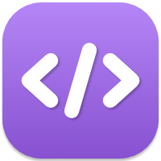
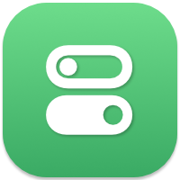

Code
These are my open source projects. I also built some apps over the, check them out here.

XMLKit
Codable XML , Reader and Writer.
XMLKit is a Swift library for XML parsing, encoding and decoding of Codable types in a robust and type-safe manner using Swift’s Coding practices.
Currently in private development, it’s partially embedded in FeedKit, and should be released as an standalone library once it’s more mature.
FeedKit
Universal Feed Reader and Generator.
A Swift library for Reading and Generating RSS, Atom, and JSON feeds, for all Apple platforms and Linux.


DefaultsKit
UserDefaults for iOS, macOS and tvOS.
An open source framework that leverages Swift’s Codable capabilities to provide a Strongly Typed wrapper, on top of UserDefaults, for iOS, macOS and tvOS.

InfoKit
Strongly Typed access to the Info.plist
An open source framework that provides Strongly Typed access to the Info.plist, for iOS, macOS and tvOS.